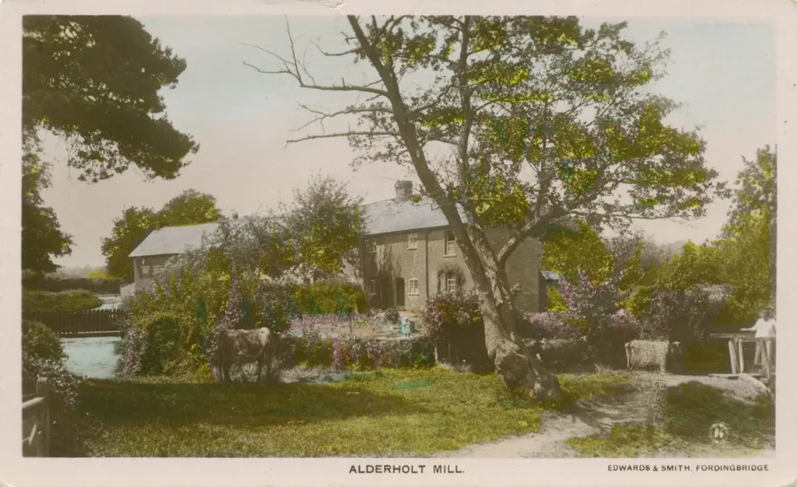
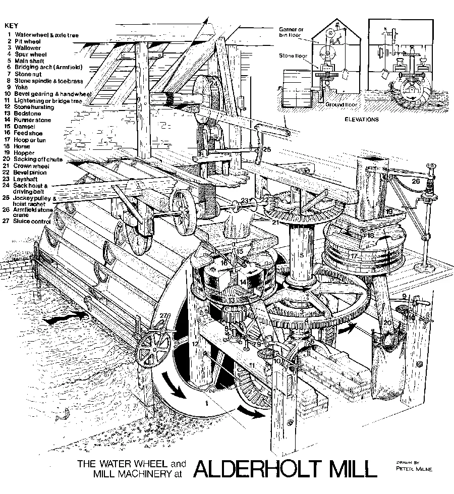
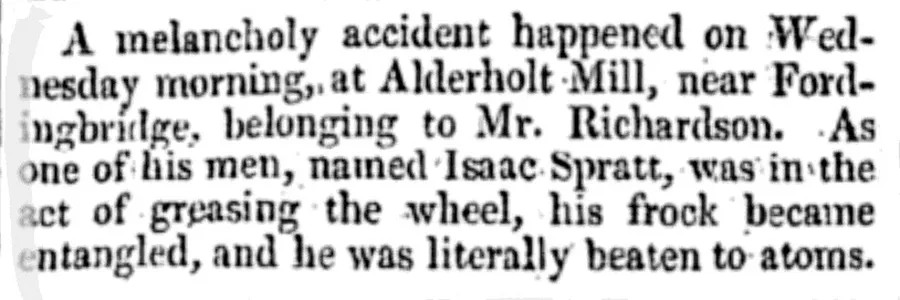
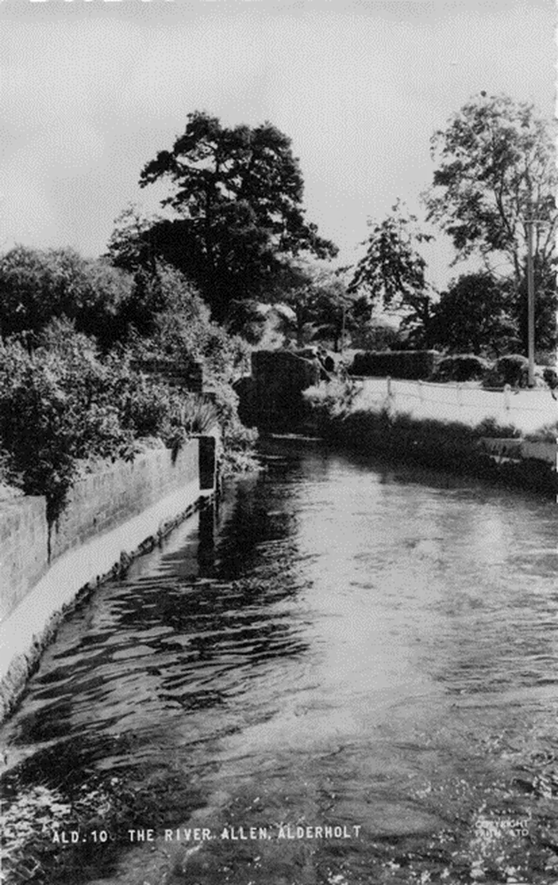
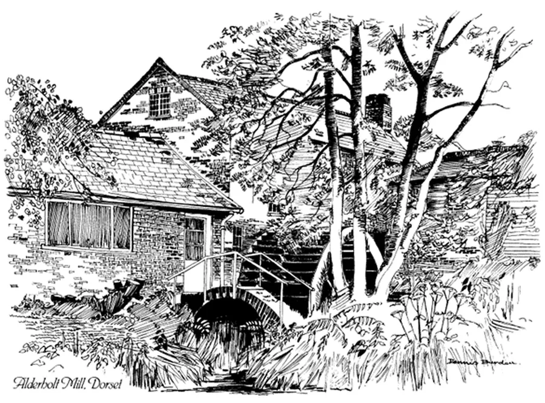
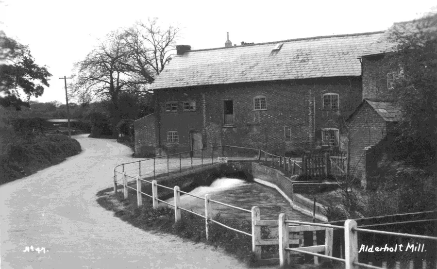
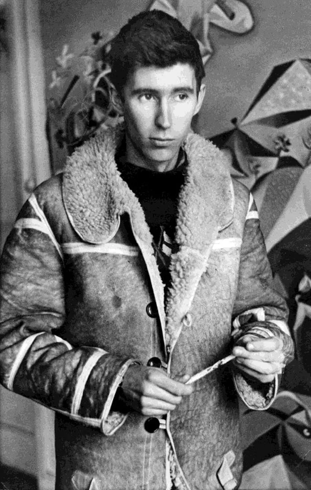
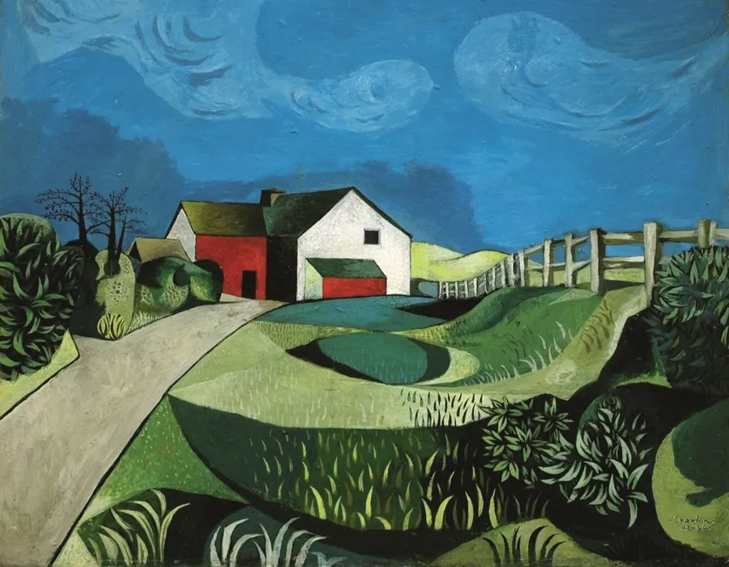
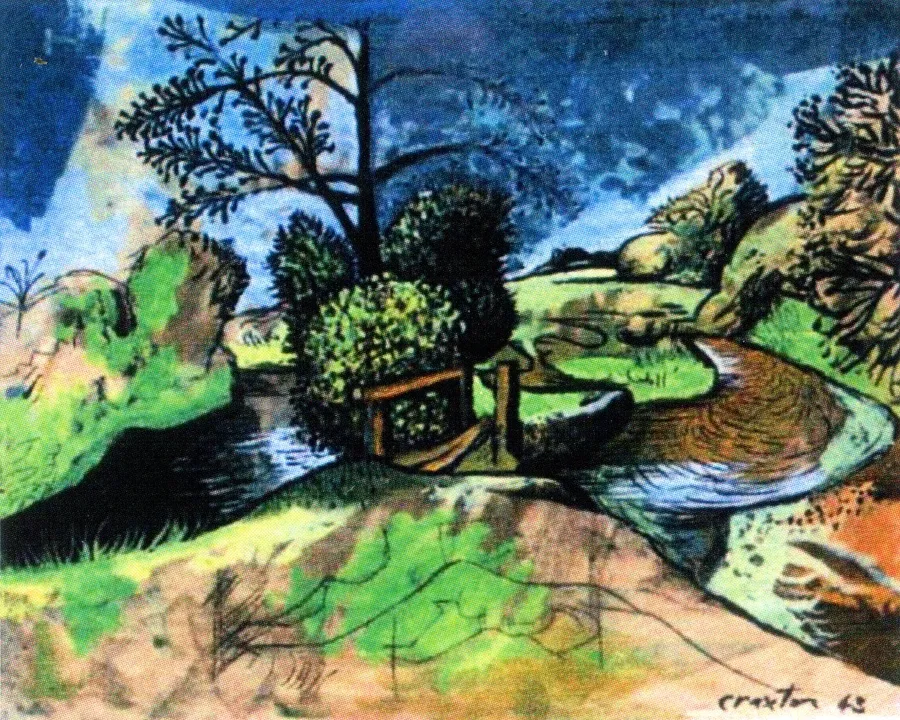
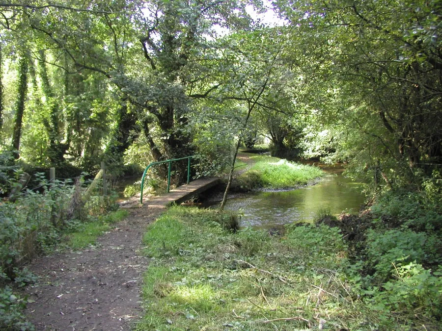

Alderholt Mill
by Adrian King

This mill stands on the Allen River which is a tributary of the River Avon. The stream is the boundary for both parish and county the latter being between Dorset and Hampshire. At one time part of the county of Wiltshire reached to the river but the Wiltshire parishes of Damerham, Martin and Whitsbury were transferred into Hampshire in 1895.
There was a village saying that a man standing in the stream in one county could lay his hands on the other two. The first Squire Churchill who owned property in all three counties often told how he flushed a duck in Dorset, shot it in Hampshire and picked it up in Wiltshire.

Above the bridge the stream is called the River Allen and below the bridge it is called the Ashford Water. Salisbury Estate records show references to the Mill in the 1330’s but there may have been a mill on the site before then. For many centuries it was known as Padner Mill and when first mentioned the Miller was William de Paednor.
Throughout the medieval period it was one of the customs of the Manor at Cranborne that the customary tenants of the village should have their grain ground there. Apart from the mill being used in 1942 during the war for grinding cattle food it had little use in the 20th century until 1982 when it was preserved, although a previous owner sometimes used the wheel to power a lathe.

It is the only remaining mill of four mills that were once on the river. Hawkhill is now a farmhouse, the one at Damerham is a cottage and there is no trace of the fourth one. Behind the mill is an old water meadow and after heavy rains the flooded serrated ditches creates a herringbone effect. Some of these ditches had hatches along the millstream so that they could be manually flooded.
This field is surrounded by water with the mainstream flowing down one side and the manmade millstream — controlled by a hatch where it leaves the mainstream — down the other side. Water is backed up in a small millstream to allow the mill to work instead of the usual pond or leat.
The iron breast shot or struck waterwheel made by W. Munden of Ringwood that is at the back of the Mill replaces one which was originally inside the building. It dates from about 1862 – 72. W. Munden later became Munden & Armfields and then Armfields. The firm may have done maintenance work on the Mill over the years and recently replaced a number of the paddles.

The wheel was placed at right angles probably to accommodate the unusually wide vanes. Water was diverted onto the wheel from the millstream by closing a hatch under the main building which sent the water down over another hatch. The tailrace ran behind the house joining the mainstream before running under the bridge. The water channel at the front is a result of the wheel originally having been inside the building.

The house that is attached to the mill building by a small annexe was originally three cottages but was converted into one house when the property was sold away from the mill house. Preservation began in 1982 when woodwork in the mill building needed treating for woodworm and death-watch beetle. During the winter of 1984 – 85 the spur wheel located downstairs had its entire 200 plus teeth replaced with each separately cut and inserted.
The original teeth were probably made from apple or hornbeam but the new ones were made from beech. Mr. R. Waskett completed the repairs to the spur wheel. Sadly most of the old working drawings of the Mill were destroyed.

Recent renovation of the mill has been
- The replacement of the old footbridge over the millstream.
- A new grid in front of the hatch by the wheel to stop unwanted debris getting under the paddles and causing damage.
- The hoist was rebuilt in 1986.
- In 1986 a new 'horse' was constructed for the centre of the French Burr stones which guides the corn into the stones and controls it.
It was not until February 1987 that milling of locally grown wheat commenced. 100% Stoneground Wholemeal flour is now produced for sale in the Mill and to selected shops in the area. The Mill and craft centre had been opened to the public in 1982 in order to self-finance future preservation work. Maintaining machinery and restoring the mill to full working order was made possible with the profits from the arts and crafts exhibitions.
The Mill is open weekends only for cream teas and milling demonstrations from Easter to August Bank Holiday. Alderholt Mill is called Alderwood Mill on the 1791 map of Hampshire that was surveyed by Thomas Milne and published by W. Fabia.
Millers and workers
- William de Padenor - 1330’s
- William Sterlyng - 1459
- Nicholas Snell - 1547
- Thomas Snell - Late 1700’s
- David Humly - MA1805
- Richard Williams - MA1800
- David Humly - MA1805
- Isaac White - MA1808
- Thomas White - MA1802
- Isaac Spratt - MA1824
- Fashem Singleton - 1841C
- Samuel Richardson - KC1848, 1851C
- George Bush - KC1851
- Titus Mitchell - KC1855
- Stephen Witt - KC1859 - 1889
- Robert Stephen Hayter - MA1875
- Charles Jeffries - 1881C
- Edward Cutler - KC1895
- Samuel Coombs - MA1899
- William Hollins - KA1903, KA1907
- Frederick Joel Bailey - KA1911 - 1927
- Sidney Bailey - MA1927, MA1931
- Sidney Bailey (Mrs.) - MA1911, KA1931
- Fred Bailey - FA1933
- John and Ann Pye - 1978
- Richard and Sandra Harte -
Key
MAxxxx = Mill Archive
KCxxxx = Kelly's Cranborne
KAxxxx = Kelly’s Alderholt
xxxxC = Census
FAxxxx = Fordingbridge Almanac

John Leith Craxton (1922 - 2009) was a painter who visited E. Q. Nicholson at Alderholt Mill House 1942 - 43. Charlotte Mullins comments in Country Life that
"John Craxton was a teenage art student when he first visited Mill House in Alderholt. It was 1942 and he had been sharing a studio in London with fellow Goldsmiths student Lucian Freud when bomb damage saw the pair temporally forced to relocate.
They headed to Hampshire (actually just in Dorset) and the family home of Elsie Queen Nicholson. Known as E.Q. she was sister-in-law to Ben Nicholson and married to his younger brother Christopher. E. Q. Nicholson had bought Alderholt Mill house in 1941 and lived there until 1947."

E. Q. Nicholson was a painter and textile designer and became good friends with Craxton, travelling with both the young artists in the 1940’s. Craxton recounted the impact the Hampshire scenery made on him.
"The great elemental landscapes were too monumental for me... I referred the more intimate places: metaphoric fallen trees, mill-houses and cart tracks were places close to my temperament."
John Craxton was the son of composer and musician Harold Craxton and rarely had any money. (16 October 2024 Country Life)
Additional Images

Charlotte Mullins says in this picture by John Craxton
“We see the Mill House end on, silhouetted against a rich blue sky. Sunlight illuminates the fence, dances across the lime-green grass and shimmers on the roof. Craxton produced a series of drawings and paintings of E.Q.’s house using Ripolin enamel paint that he obtained cheaply to add rich, dense colour.”
'A Restless Soul' Exhibition at Chania. Craxton Estate

This was a favourite location for Craxton and he painted several pictures using different mediums from this point by the side of 'Alderholt Bridge'. (Craxton Estate)
